|
 |
| home | tech | search | checkout | contact | |
|
|||
|


Australian 250 Crossflow Swap
|
||||||||
The 250 Falcon engine with integral manifold is limited in performance due to the restrictive nature of the cylinder head. To get the most out of it requires radical modifications to improve both intake and exhaust flow. Several rodders have resorted to "hacking off the intake and exhaust" and some have even imported Australian or Argentinean cylinder heads to alleviate the problem. I decided that the original head design is very limited and elected to import a better engine to replace it: the Alloy Head Crossflow. First introduced in 1976 with an iron head and in 1978 with an alloy head, the Crossflow six is essentially a "Cleveland" version of the six. With its canted valves and 1.73 ratio rockers, the Crossflow has the potential for far more power output than the integral manifold Falcon six can ever reach. Our goal is a meager 200 naturally aspirated hp! 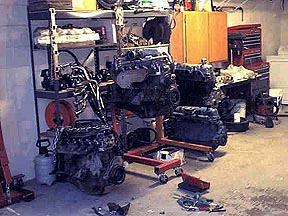
Left to right, 2V carb Crossflow, EFI Crossflow, US200, US250 with Oz 2V head The Crossflow is a direct development of the earlier 250 2V and shares many parts with the US 250. The reciprocating assembly is similar and many of the external mounting bosses are the same. The common ancestry makes this engine a relatively easy replacement for the US250 six.
1/10/01 1/11/01
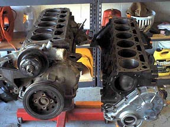
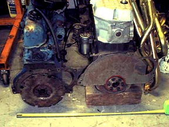
That's all for now. I'm shooting some photos (digital and 35mm) as I go so that slows me down a bit. More to follow as I complete the teardown. 1/12/01 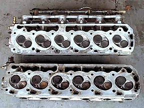 No doubt the engine is old, though. Some crusty stuff on the crank, badly worn timing chain (so loose it will almost fall out), bearings are all worn out. Crank still specs out good, though. The bearings interchange between the US and Oz engines. The Oz 250 and the US250 blocks are similar but not identical. The US250 is about 1" wider at the pan rail (and engine mounts), which will make it easier to transplant the Oz motor, but makes the pan different and not interchangeable. Likewise the timing covers will not interchange. On the pan and timing cover, the Oz motor looks like it is closer in dimension to the 200. The deck height is about .100 shorter than the US 250. The US 250 rods and pistons will fit, but compression height is about .024 shorter on the US piston. The Oz piston also has a deep recessed bowl. I have not cc'd it yet. Another noted difference is that the EFI piston uses narrow low tension rings. The oil pumps will interchange, but the US pump has bigger gears and possibly more volume. The pickups will also interchange. Timing chains are different. The Oz motor uses smaller gears similar to the 200. Might even be the same. The US250 uses larger gears and a longer chain. The US250 cam seems to be higher in the block. The main caps are beefier on the Oz motor. A bit wider and heavier looking. The rods look a lot like the C9 rods. They have identical dimensions (5.88" center to center, .912" pin) and are interchangeable. ARP 289/302 5/16" rod bolts fit perfectly. The Oz water pump is alloy vs cast iron. It has a steel plate sandwiched between the pump and the impeller. Judging from the amount of silicone I found on both engines, leakage might be a problem. I cannot figure out how to change the inner gasket without pressing the pump apart. I think that if you ever develop a leak, you have to put on a new pump. The US250 pump will interchange and I think I will use it instead. The overall height of the EFI 250 is less than the US250. Even with the plenum in the stock location, it sits lower than the air cleaner I use now. I'll have more room than I have now. A quick measurement of the engine compartment shows that the headers I got from Mike at Classic Inlines, which were special ordered for me, should fit fine. The combustion chambers on the EFI head are different than the Carb'd head. haven't cc'd them yet, but the carb'd head should have 50cc chambers vs. 56 for the EFI. The valves in both are the same size 1.80/1.49. See photo above. So far the verdict is that the engines are more like cousins, not siblings. There's some commonality which helps with the interchange, but enough uniqueness that Oz parts are required. However, once I get a T-5 adapted, this will be a slam dunk, swap-wise. 1/13/01 The front seal was brittle and probably leaking. The previous owner obviously tried to stop the leak by stuffing the balancer retaining bolt hole with silicone! There was also some silicone glopped onto the outside of the pan in what looked like an effort to stop a leak at the pan gasket! Guy must have owned stock in a silicone factory. As I pointed out earlier, the bearing caps are a little heftier than the US250's. The block casting is very well done. The bearings are identical to the US250 with one exception. The Oz motor only uses a thrust surface on the block side as opposed to the US bearing which has a thrust surface on the cap also. This means I will have to trim away the thrust surface from the cap bearing shell in order to use it in the OZ motor. easy enough to do. While the Oz block is very nicely done, I can't say the same for the crank. It has a lot of casting flash hanging off of it. I'll clean that off with a grinder. The only apparent difference between the US250 and Oz crank is that the US crank has a slinger cast in just ahead of the rear main seal area. If that were machined off, the US250 crank could be used. The US250 AC/Alternator and the PS pump brackets bolt on to existing bosses in the Oz block, so that makes things easier if you intend to use them. I will ream the block out to use a Duraspark distributor tomorrow. The block is machined for a .485" distributor shaft. The Duraspark shaft is .515" After a thorough scrubbing, I painted the block Ford blue. Looks pretty nice. I mocked up the 2 bbl manifold with the DGV Weber and it is over 1" shorter than the US250/YF combination. This should fit nicely in the Mustang. 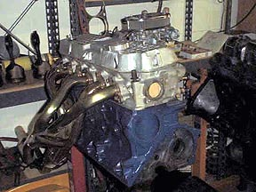 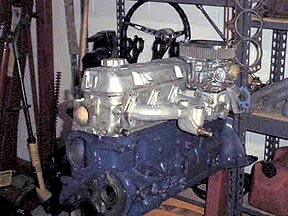 1/15/01 I also found that 351C, Boss 302, and Big Block Chevy's all carry the same part number for roller rockers. That makes them very available. I'm ordering custom 5/16" pushrods from Comp Cams. The lifters are just small block Ford, so those are easy. I mocked up the engine again with the brackets. The US brackets fit, but are a bit clunky. I believe I will use the Oz alternator and A/C bracket. I'm eliminating the power steering so that's no problem. I reamed the distributor shaft opening to .515" in order to use the Duraspark. When I placed it on the mockup, the distributor turned out to be too tall. The cap hits the intake runner. I will have to use the Duraspark internals in a points type body. At first I considered just a re-ring and bearings, but I've since had a change of heart. The engine will be over-bored (specs undetermined) and a trip to the machine shop is planned. I am going to use US pistons in the first mild motor. The pistons I have sourced have a shallow dish, but not as much compression height. The CR will still go up to about 9.2:1 - an increase from the stock 8.89:1 CR. The US250 water pump and oil pump fit perfectly. 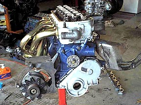 2/2/01 In the meantime, I decided that I would just skip straight ahead to the EFI installation. Originally the plan was to build a carbureted "mule" just to test out, but a group purchase on an SDS system became available and I placed an order. I am getting the SDS EM3E system to control both the fuel and timing. I'll retain the MSD 6A as the triggering device, but will be using crank mounted magnetic triggers. I intend to use the big cam with the EFI. The tunability of the SDS will allow me to adjust the fuel and ignition curve to suit. I also found a good T-5 and have ordered a tranny adapter from Sacramento Mustang. I need to give some thought to the clutch mechanism. The mechanical linkage is an option, but I may go hydraulic. I gotta think on that one some more. I've begun removing the US250 from the Mustang and have pretty much everything disconnected and ready to pull. Perhaps this weekend I'll have it out so I can clean the engine bay. Monday I'm taking some things over to have them ceramic coated. Right now it's just headers, timing cover, and valve cover. I may do the EFI runners and plenum, but the budget is getting tight. I'm getting real close to eating into the paint budget! I also ordered all the parts to convert back to manual steering. While the engine is out, I'll do that swap too. 2/08/01 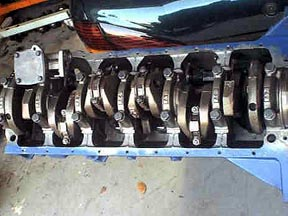 The roller timing gear fits the cam and crank tighter than the stock gears. They had to be persuaded with a brass drift but fit just fine. I degreed the 292 cam and installed it straight up. After assembly, I measured again and the Compression Ratio should be right at 9.5:1, just what we were shooting for. The order is being filled at SDS and may ship tomorrow or Monday. I should have it within the week! I went to the aircraft surplus store at lunchtime today and got some aluminum for the crank trigger brackets. Tomorrow, I finish pulling the old 250. Sat/Sun I have to work, so progress will be slow. 2/10/01 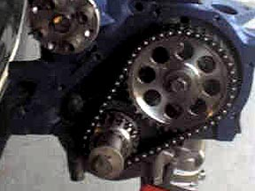 2/14/01 I had to use the US250 oil pump drive because the Oz oil pump drive shaft was too long when using the US pump. I also used the US 250 pickup tube because is was larger. The engine turns very easily. I think the gap-less rings have less tension than regular rings. It only takes about 40 lb ft of torque to turn the assembled engine even with the rockers hooked up and the valves operating. I'll have to pull the balancer again later to mount the crank trigger magnets. You'll notice the Bosch distributor. Since the timing and ignition advance will be handled by the SDS, there's no need for any sort of advance on the distributor. It's only there to handle the spark. This thing looks tall, but is actually shorter than the carb'd US250 by over an inch, counting the carb and air cleaner. 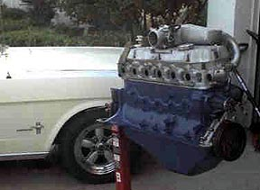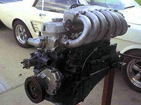 2/15/01 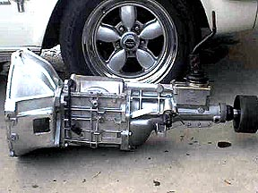 2/16/01 After I got the engine out, I decided to go ahead and drop the Crossflow in just to check fit of the intake and headers. In order to get this engine in when it's assembled, the export brace has to come out. The engine fit easily on the frame mounts using the original 1966 motor mounts.The pan clears the steering linkage and it looks pretty good. The number six intake runner is pretty close to the export brace, but there's about 3/8" clearance, so we'll see how it looks after the tranny is in and all the angles are correct. The headers are almost perfect. The number three tube rubs the center of the shock tower, but that's easily corrected. I put the hood back on and checked for hood clearance. I have nearly 2" above the intake plenum, far more than I had with the air cleaner on the US250. The brake master cylinder looks pretty close to the intake runners, but there's still room to work on it. 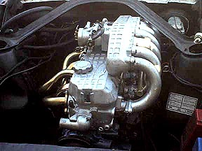 2/19/01 Three things cropped up after I put it together and started measuring. First, the T-5 combo is about 1 1/2" longer than the AOD. I'll have to have the drive shaft shortened. Second, the tranny mounting pad is about 1" closer to the block than the AOD, but there's more than enough adjustment available on the Windsor-Fox cross member. Third, the 3.8 T-bird starter will not fit. The orientation of the nose is wrong. It places the engagement cover directly against the block. I'll need a 200 starter. All these things are easily dealt with and the swap is looking good. I still have to figure out how to mount the hydraulic master cylinder. I still think I may have to remove the power brake booster. 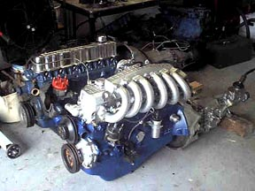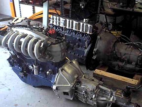 3/20/01 I've taken a closer look at the SDS EFI system. I've installed the trigger magnets in the balancer, made patterns for the trigger sensor bracket, and looked at mounting points for the ECU. I think I'll relocate the MSD to the interior. I saw some interesting mounting trays in the surplus shop which might be just the thing. I'm beginning to realize the full magnitude of what I'm doing here. An Aussie engine swap. Conversion from an AOD to a T-5 transmission. There's the fuel injection. A hydraulic clutch. Electrical upgrades. Power to Manual steering conversion. Cooling system. Paint, body, and interior. Whew! Any one of those would be a major project in itself for most. I don't feel so bad for not making significant progress. I'll be going to the swap meet and car show in Daytona this weekend. Maybe I'll find some bits there. 3/28/01 A few more bits and pieces are coming together for the Crossflow. I went to the junkyard the other day and picked up a fuel pressure regulator for a Volvo. Same as the Crossflow except it has a barbed fitting for the return line. That'll make hookup easier. Also picked up a short piece of the the Volvo fuel rail. I brought this home and welded it to the inlet. That allows me to use a barbed high-pressure inlet fitting from the Volvo. I tapped a hole in the intake plenum for the air temp sensor and picked up another Throttle Position Sensor (TPS). The old TPS was giving me strange readings on the multimeter. I began making a mount for the ignition trigger. I have some 1/8" aluminum that will work out fine, but it occurs to me that it might actually be better to weld a mounting boss onto the aluminum cover. I'll check that out this week. The clutch, pressure plate, and release bearing arrived yesterday. It's a diaphragm type 10" unit. I originally wanted to use the 10.5" setup, but clearance inside the bell housing is tight. The second Crossflow is nearly ready to pickup at the machine shop. It's going to be bagged a put aside either for sale of a future project. Not sure what I'll do with it yet. This weekend I plan to assemble the engine/tranny and maybe install it in the car. 6/25/01 The engine is awesome! It pulls hard, strong, and quickly from idle to the self imposed 5000 rpm redline. Once I have the car tuned a little better I'll raise the fuel cutoff a bit higher to see where the power really lies. In the pictures below you can see the Chevy Cavalier aluminum air cleaner and the cold air duct thru the fender well. Notice the insulation to keep the header heat from heating up the intake hose. One disappointment has been the headers. The very attractive cadmium plating turned out to be paint which burned off in the first few minutes! Well, it looked good for a little while. I guess I'll need to make a trip to HyperKote after all. The white face gauge inserts are easy to read, especially after removing the factory colored lenses and simply painting the bulbs blue with a permanent marker. That's a Mustang II console with a Honda shift boot and a handmade aluminum cup holder in place of the coin tray. Sitting on the seat is the SDS programmer and my new $14 million dollar beret. The shift lever is an original three speed lever with an adapter for the T-5 welded on by my good friend Al Martin. The T-5 was a great swap for this car. It absolutely transforms the way the car drives. I'm not sure if we hit the 200 hp target, but we are certainly very close. The car will incinerate the tires in first gear, and wheel spin in second is no problem. The first test drive, we "accidentally" lit up the tires in third on some damp pavement. A couple of impromptu runs to 60 netted us some times between 7-8 seconds - very quick! A locker would be nice to have now! I have to turn my attention to paint and bodywork now!
|
||||||||

[ home ]
[ index ] [ products ]
[ search ]
[ checkout ]
Copyright 2012 - Classic Inlines - All Rights Reserved